第三章 如何撰写综述
研究很少从一张白纸开始。一个问题为什么值得研究、哪些概念已经形成共识、已有结论为何不一致、什么证据仍然缺失，都要通过阅读和综合既有文献才能回答。文献综述因此不是论文开头的“背景材料”，而是研究者进入学术对话、校准研究问题并说明自身位置的过程。
本章从“综”与“述”的关系出发，依次讨论综述的类型和质量标准、如何借助文献定位创新、怎样设计检索与筛选流程、如何管理和综合阅读记录，以及文献可视化、生成式人工智能和参考文献工具的使用边界。最终目标是把“找到一批文献”转化为“形成一套有证据、有比较、有判断的知识结构”。
3.1 综述是什么
“综”与“述”是两个不可分割的动作
“综”是围绕一个明确问题收集、筛选、归纳和比较已有研究，使分散的概念、观点、方法和证据形成结构；“述”是在综合基础上解释这些研究之间的联系与差异，评价其贡献、限制和适用范围，并据此提出尚待回答的问题。只有“综”而没有“述”，文章容易变成资料摘抄；只有“述”而没有系统材料，判断又会失去证据基础。
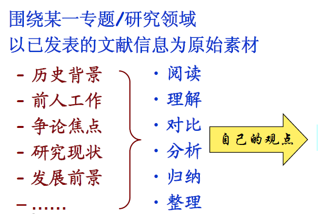
因此，综述并不是把每篇文献压缩成一句话再按作者排列。它至少要完成四项任务：界定问题和概念，展示研究发展与主要分支，比较不同证据及其解释，说明哪些问题已经较清楚、哪些仍不确定。综述中的“观点”也不是脱离证据的个人感想，而是对文献关系进行公开、可追溯的解释。
综述论文与论文中的文献综述
“综述论文”（review article）和“论文中的文献综述”（literature review section）容易混淆。前者以综合既有研究本身为主要研究任务，通常形成独立发表的成果；后者服务于一项新的实证、理论或方法研究，用来说明该研究建立在什么基础上以及为什么还需要继续研究。两者都需要检索、筛选、阅读和综合，但篇幅、问题范围与报告要求不同。
| 比较维度 | 独立综述论文 | 研究论文中的文献综述 |
|---|---|---|
| 核心目的 | 系统呈现某一问题的知识状态、争议和未来方向 | 为当前研究界定概念、建立理论依据并说明研究缺口 |
| 成果主体 | 文献本身就是主要研究材料 | 文献综述是完整研究的一部分，后面通常还有方法、结果和讨论 |
| 问题范围 | 可以覆盖一个领域、主题或明确问题，范围由综述类型决定 | 应紧扣当前研究问题，不宜写成无边界的领域史 |
| 方法透明度 | 尤其是系统综述、范围综述，需要详细说明检索与筛选过程 | 仍应说明重要来源和选择逻辑，但篇幅可按论文体例压缩 |
| 评价重点 | 综合是否完整，方法是否可复核，结论是否由纳入文献支持 | 是否准确引出变量、理论、方法选择和当前研究的必要性 |
综述文章常常不产生新的实验或调查数据，但这不等于它没有方法。检索式、数据库、时间范围、纳入与排除标准、质量评价、编码框架和综合方式，都会影响最终结论。方法越透明，读者越能判断遗漏和偏差；方法描述不足，再流畅的叙述也可能只是选择性阅读的结果。
3.2 为什么要写综述
外在要求与内在需要
项目申请、开题报告、结题报告、学位论文和期刊论文通常都要求回顾已有研究，这是综述的外在用途。更重要的内在用途是帮助研究者澄清自己的问题：核心概念是否有多种定义，关键变量如何测量，哪些方法已经使用，结论在何种对象和情境中成立，争议究竟来自理论差异、样本差异还是方法差异。
如果只把综述当成提交材料，作者容易在研究完成后临时补写，结果是文献与研究设计脱节。把综述作为研究工具，则会形成循环：初步阅读帮助缩小问题，问题变化又要求调整检索，新的证据可能推翻原先设想，研究设计随后进一步修正。综述不是研究开始前一次性完成的步骤，而是贯穿选题、设计、分析和讨论的持续工作。
好综述的十项质量标准
全面性不等于“什么都写”，批判性也不等于“把前人都批评一遍”。质量标准必须结合研究目的解释。
| 标准 | 具体含义 | 常见误区 |
|---|---|---|
| 全面性 | 覆盖与问题直接相关的关键概念、研究分支、代表证据和重要异议 | 追求文献数量，无限扩大题目 |
| 深度 | 比较理论、对象、样本、方法、测量和结论，不停留在摘要复述 | 每篇文献只写一句结论 |
| 更新性 | 纳入能够反映当前进展的研究，同时保留理论源头与经典证据 | 只看最近几年，丢失概念演变 |
| 结构性 | 分类原则清楚，各节共同回答同一中心问题 | 按下载顺序或作者顺序排列 |
| 引用质量 | 关键概念、数据与判断尽量回到权威和原始来源 | 用二手转引或网络摘要代替原文 |
| 原创性 | 对文献关系提出自己的、有证据支持的综合判断 | 把“前人没做过”当作唯一创新 |
| 可读性 | 语言准确，段落有中心，标题和过渡能显示论证方向 | 术语堆积，句子冗长，节与节之间跳跃 |
| 目的明确 | 每个部分都服务于综述问题或当前研究的定位 | 写了很多相关知识，却无法说明与研究的关系 |
| 批判性 | 在尊重证据的前提下指出限制、矛盾和适用边界 | 使用“研究很少”“缺乏深度”等空泛贬低 |
| 指导性 | 从现有证据提出可行的后续问题、对象、方法或验证路径 | 只在结尾笼统写“未来应加强研究” |
更新性尤其需要谨慎。最新文献可能带来新问题、新数据和新方法，却不一定自动比经典文献更可靠；经典文献可以解释概念来源，却未必适用于当前制度和技术情境。合理的做法是同时建立“源头文献—关键节点—当前前沿”三条线，而不是在“只看经典”和“只看最新”之间二选一。
从反例中识别“只综不述”
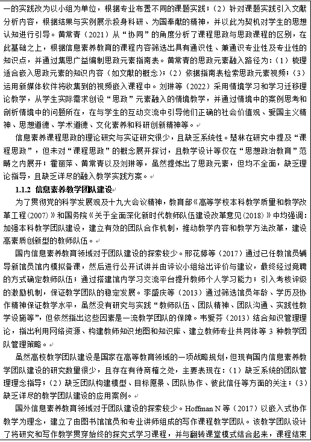
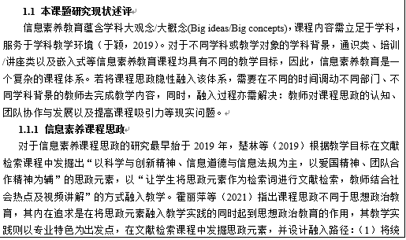
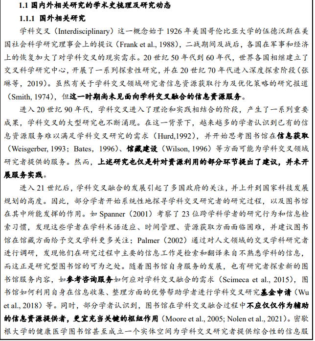
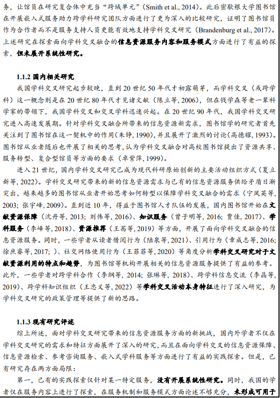
这些反例共同揭示了五种风险：一是“张三认为、李四认为”的流水账；二是同一观点换用多篇文献反复表达；三是依赖少量文献便宣布研究空白；四是为了突出自身价值而过度贬低前人；五是批评与拟开展研究之间没有方法上的对应关系。改写时，应先给一组研究命名，例如“政策解释路径”“动机测量路径”或“纵向证据不足”，再选择代表文献比较，最后说明这种比较如何改变当前研究的设计。
3.3 先确定要写哪一种综述
“文献综述”不是单一体裁。Grant与Booth曾分析14种综述类型，说明不同类型在检索、评价、综合和分析方面有不同要求。初学者不必记住所有名称，但必须先判断自己的问题需要什么样的证据综合；否则很容易用叙述性写法提出系统性结论，或用复杂的流程回答一个本可清楚论证的小问题。Grant与Booth的综述类型研究
| 类型 | 主要目标 | 方法特征 | 适合回答的问题 |
|---|---|---|---|
| 叙述性综述 | 解释一个主题的概念、历史、争议和主要观点 | 结构灵活，强调作者的理论组织；仍需说明来源与选择理由 | 一个领域如何发展，主要理论怎样解释现象 |
| 整合性综述 | 综合不同方法或理论的研究，形成新的概念框架 | 可纳入定量、定性和理论文献，重视跨研究比较 | 分散证据能否形成更完整的解释模型 |
| 系统综述 | 用预先规定且透明的方法回答明确问题并尽量降低偏倚 | 预设标准、系统检索、双人筛选或核查、质量评价、结构化综合 | 某项干预是否有效，某一关系的证据是否一致 |
| 范围综述 | 描绘研究范围、概念使用、证据类型和知识空白 | 问题通常较宽，系统检索并对证据进行图谱式整理 | 该主题研究了什么、怎样研究、哪些对象尚少 |
| 文献计量或科学知识图谱研究 | 分析发表、引用、合作、共词或共被引结构 | 依赖规范化书目元数据、计量指标和网络分析 | 领域规模、主题聚类、合作网络和演化线索怎样 |
| 元分析 | 对可比较研究的效应量进行统计综合 | 需要明确效应量、异质性、偏倚和模型选择 | 多项定量研究的总体效应及差异来源是什么 |
系统综述并不等于“检索得很全面”，元分析也不等于所有系统综述都必须计算总体效应。Cochrane将系统综述概括为：用预先规定的纳入标准回答具体问题，并通过明确、系统的方法尽量减少偏倚。范围综述则更适合探索概念、证据类型和研究分布，JBI手册对其方案、检索、数据提取与呈现提供了专门指导。Cochrane系统综述手册；JBI范围综述指南
PRISMA 2020是一套提高系统综述报告完整性的指南，包括核对表和流程图。它帮助作者报告为什么开展综述、使用了什么方法以及得到什么结果，但“填写了PRISMA流程图”本身不能证明检索全面、质量评价正确或综合没有偏倚。PRISMA 2020
对于一般课程论文或研究报告中的文献综述，通常不必机械套用完整系统综述流程，但可以借用其透明性原则：至少记录检索日期、数据库、核心检索式、筛选理由和最终纳入文献。只要声称“系统综述”“范围综述”或“元分析”，就应遵循相应方法和报告规范，不能把体裁名称当作提高分量的标签。
3.4 用文献定位创新，而不是先宣布创新
创新判断与文献检索必须往返进行
研究者可能从理论、方法、数据、对象、视角或知识组合中形成新意，但“新”是相对于已有研究而言的。仅凭个人没见过，不能证明学界没做过；数据库没有检索到，也可能是检索词、语言、时间范围或数据库覆盖不当。更可靠的过程是：提出初步设想，进行探索性检索，阅读代表文献，修正问题与概念，再用更精准的检索验证空白。
| 创新类型 | 可能的表现 | 综述需要证明什么 | 常见误判 |
|---|---|---|---|
| 理论创新 | 新概念、新命题、新模型，或重新整合既有理论 | 旧理论在哪些现象、对象或情境中解释不足，新框架如何改进 | 只给旧概念换名称 |
| 方法创新 | 引入其他学科方法、改进测量或形成新的研究设计 | 既有方法存在何种限制，新方法为何适合当前问题 | 使用新软件便称为方法创新 |
| 数据创新 | 新数据集、多源融合、用新代理变量表征现象 | 数据的独特性、有效性、伦理与可复核性 | “别人拿不到”被等同于数据质量高 |
| 对象创新 | 研究被忽视的群体、区域、学段或制度情境 | 对象为何具有理论或实践意义，既有结论能否直接迁移 | 只更换样本地点，没有新问题 |
| 视角创新 | 从宏观、微观、参与主体或跨层级关系重新观察 | 新视角揭示了哪些旧分类无法看见的关系 | 仅改变叙述角度，没有新增证据 |
| 组合创新 | 把原本分离的主题、理论、数据或方法连接起来 | 两者为什么应被放在同一问题中，连接产生什么新解释 | 生硬拼接两个热门词 |
理论与方法创新要说明“为什么更合适”
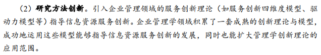
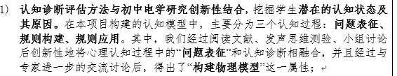
理论创新可以来自技术和社会变化造成的解释缺口，也可以来自跨学科理论迁移、既有理论整合或对隐含假设的重新检验。方法创新同样不必等于发明一种全新算法。把其他领域的成熟方法用于教育问题，只要完成概念映射、数据条件和有效性验证，也可能产生价值；若只更换软件或加入复杂模型，却没有改善问题与证据的匹配，则属于技术装饰。
数据、对象和视角创新需要防止“新奇性替代有效性”
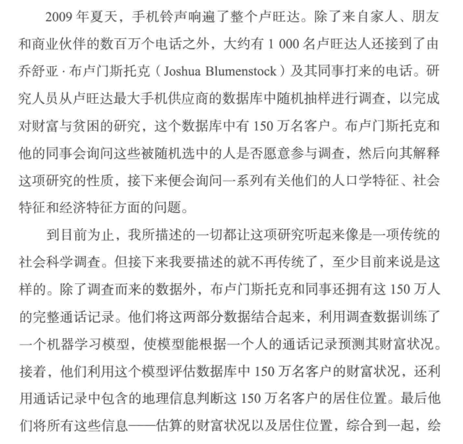
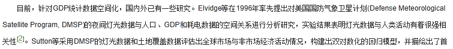
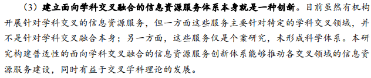
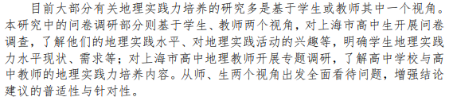
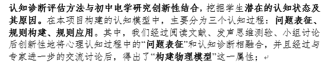
组合创新尤其要回答“为什么组合”。例如把学习动机与自主学习能力联系起来，需要理论或既有证据说明二者可能相关，并明确研究的是关系、作用机制还是共同影响因素。两个关键词在标题中同时出现，不代表已经形成一个可研究的问题。
3.5 从研究问题到可复核的检索
把问题拆成概念组
以“优师计划学生学习动机与自主学习能力”为例，政策对象、学习动机和自主学习是三个概念组。优师计划是教育部等九部门于2021年印发的中西部欠发达地区优秀教师定向培养计划，研究者需要同时阅读政策原文与学术研究，避免只用论文转述政策。教育部等九部门关于优师计划的通知
| 概念组 | 核心表达 | 需要扩展的方向 | 不能直接当作同义词的相邻概念 |
|---|---|---|---|
| 政策与对象 | 优师计划、优师专项、优师生 | 政策全称、培养对象、部属师范大学、地方师范院校 | 公费师范生、硕师计划、乡村教师计划 |
| 学习动机 | 学习动机、学习动力、学习目的 | 内在动机、外在动机、成就动机、动机调控 | 学习兴趣、学习投入、学习态度 |
| 自主学习 | 自主学习能力、自我调节学习 | 学习策略、自我监控、自我效能、元认知 | 在线学习、合作学习、学习成绩 |
扩展词不是把所有相近概念一股脑放入检索式。先记录候选词，再阅读领域中的量表、主题词和代表文献，判断它们是同义、上位、下位、相关还是结果概念。只有表达相同或可接受构念范围的词才适合用OR连接；不同概念组之间通常用AND连接。
一个可解释的初始结构可以写成：
(优师计划 OR 优师专项 OR 优师生) AND (学习动机 OR 学习动力 OR 学习目的) AND (自主学习 OR 自我调节学习)
这个结构不是最终答案。若直接把三个概念组同时相交，可能因为研究较少而没有结果；此时应分别检索“优师计划”“学习动机与自主学习”“优师计划与学习品质”等子问题，再用文献关系判断真正的空白。
从假相关中修正检索词
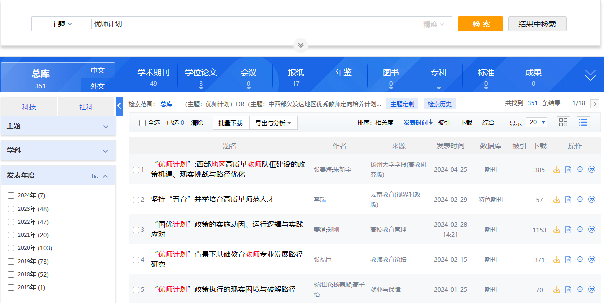
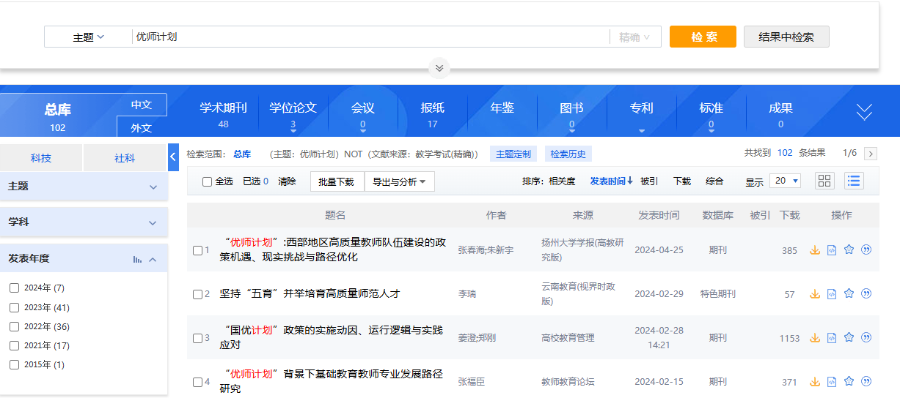
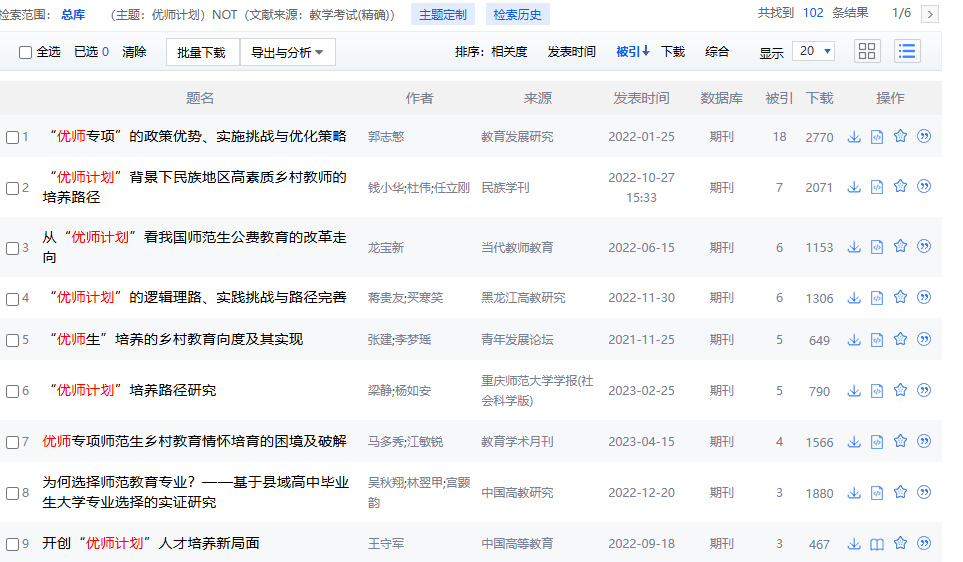
当一个2021年才正式发布的政策，在2015年甚至更早出现大量“相关”论文时，首先应怀疑检索口径，而不是据此写政策研究史。字段、分词、模糊匹配和同形词都会制造假相关。核查方法包括：查看最早年份记录的题名和摘要，切换题名、关键词或主题字段，使用短语匹配，识别数据库的自动扩展规则，必要时用NOT排除稳定噪声。界面和结果数量会随数据库收录与检索日期变化，书写方法时应记录当时条件，而不要把截图中的数字当作永久事实。
AI可以生成候选词，但不能替代概念判断
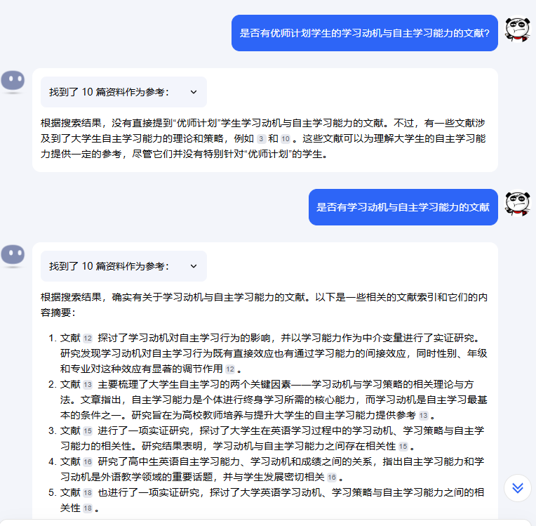
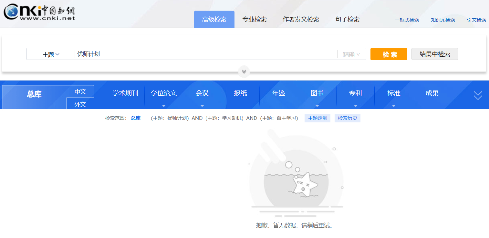
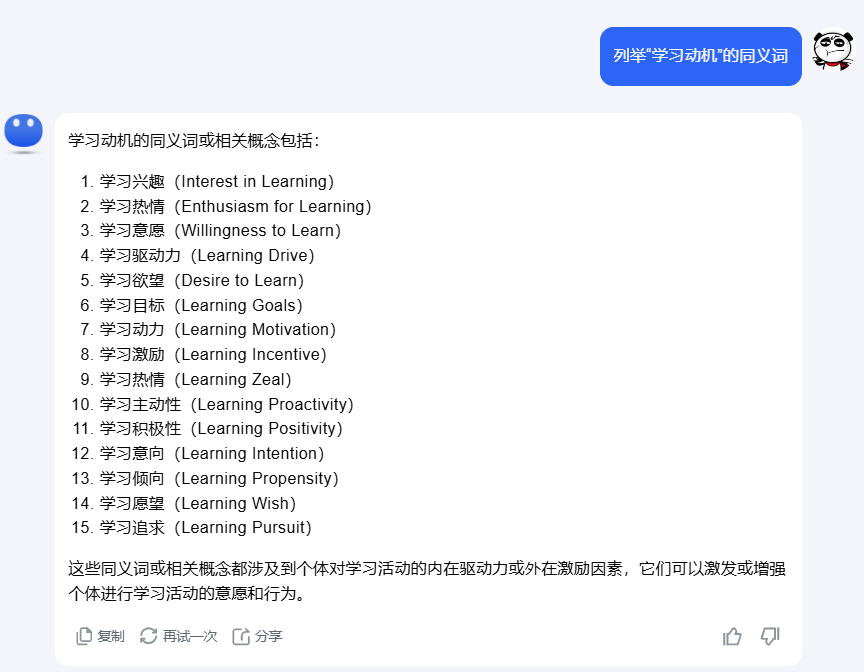
生成式人工智能适合帮助列出拼写变体、英文表达和可能遗漏的相邻术语，也可以提示检索式结构。但它可能虚构文献、混淆概念层级或依据过时信息回答。所有题名、作者、期刊、年份、DOI和研究结论都必须回到书目数据库与原文核对；人工智能回答不能充当学术事实的原始来源。ICMJE也明确要求作者核验引用，并指出不应把AI生成材料作为主要来源。ICMJE参考文献核验建议
数据库选择决定能看见哪一部分文献
中文检索可以根据主题使用CNKI、万方、维普、国家哲学社会科学文献中心和机构资源；外文文摘与引文数据库包括Web of Science、Scopus等，教育学主题还可关注ERIC。ScienceDirect、SpringerLink和EBSCO平台中的具体数据库则更多承担全文发现与获取。不能简单把文摘库和全文平台互相替代，也不能把一个数据库的结果视为整个领域。
Web of Science和Scopus都支持字段、布尔逻辑和结果筛选，但收录范围、文献类型、学科分类与指标不同。选择时应依据研究主题、语言、文献类型、时间跨度和可导出字段，并在方法中报告使用了哪些具体数据库，而不是笼统写“在网上检索”。Web of Science字段检索说明；Scopus检索说明
从数千条记录收敛到可阅读集合
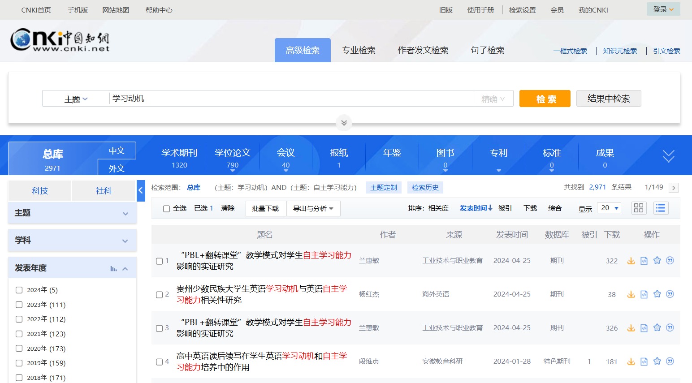
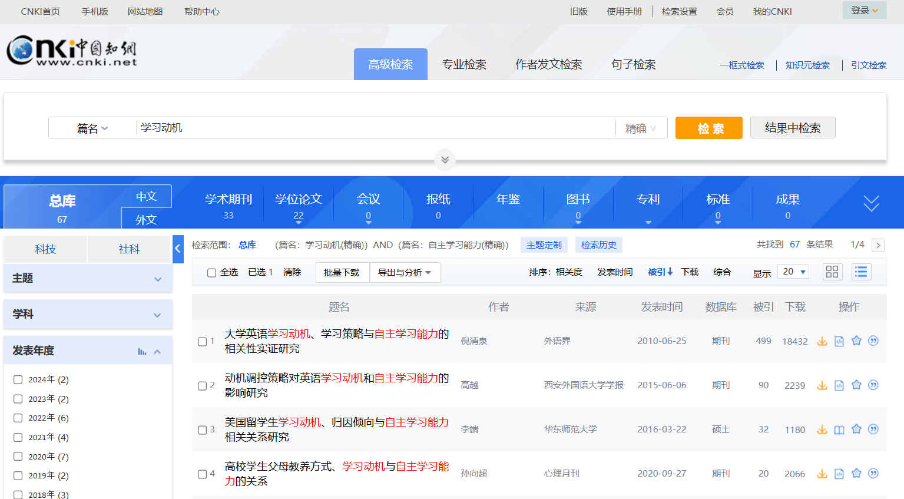
收敛过程应当由问题驱动，而不是为了把文献压到某个固定数量。可以先用高精度检索建立种子文献，再进行参考文献回溯和施引文献追踪；也可以先宽检索，再按题名、摘要、全文和质量标准分阶段筛选。每次修改检索式，都应记录“为什么改、增加或排除了什么、是否引入新的偏差”。
3.6 评价、筛选与分层阅读
指标帮助排序，不能替代方法阅读
被引量、下载量、期刊指标、作者背景和题名都可以帮助发现候选文献，但没有任何单一指标能直接等于质量。高被引可能来自经典地位，也可能来自争议；新近文献尚未积累引用；下载量受平台、开放获取和教学需求影响；期刊层面的指标不能自动转移到单篇论文。题名中出现“浅谈”也不能单独决定排除，仍要查看研究目的、方法和证据。
| 维度 | 需要检查的问题 | 可以保留的证据 |
|---|---|---|
| 相关性 | 是否直接回答综述问题，概念和对象是否一致 | 与研究问题的对应说明、纳入理由 |
| 来源与类型 | 是同行评议论文、政策原文、学位论文、报告还是新闻材料 | 出版信息、版本、文献类型及使用目的 |
| 理论质量 | 核心概念是否有定义，理论关系是否可检验 | 概念定义、理论命题、适用边界 |
| 方法质量 | 样本、工具、过程和分析是否与问题匹配 | 样本信息、测量信效度、分析与限制 |
| 证据充分性 | 结论是否由数据或文本支持，是否过度推广 | 关键结果、效应与不确定性、反例 |
| 透明与诚信 | 数据、材料、利益冲突、更正或撤稿状态是否清楚 | 数据说明、注册、勘误、撤稿核查 |
| 在综述中的功能 | 它是理论源头、方法范例、关键证据、反方观点还是背景 | 功能标签与将使用的段落位置 |
不同综述问题需要不同质量评价工具。干预研究、质性研究、横断面研究和政策文本不能用同一套问题机械评分。最重要的是评价标准与纳入证据类型匹配，并把质量判断用于解释结论，而不是只在附表中给出一个总分。
先分层，再精读
面对几十或几百篇文献，不必从第一篇开始逐字阅读。更有效的分层流程是：
- 书目信息核查。删除重复记录，修正题名、作者、年份和标识符。
- 题名与摘要筛选。判断概念、对象和问题是否基本相关，记录排除理由。
- 全文适格判断。确认研究设计、数据和成果类型是否满足标准。
- 关键文献精读。优先阅读理论源头、开创性研究、关键节点、高被引研究、前沿研究、代表性反例和方法质量高的研究。
- 补充追踪。沿关键文献的参考文献向前追溯，沿施引文献向后追踪，补齐术语变化和重要争议。
- 接近定稿时更新。用保存的检索式重新检索，检查是否出现会改变结论的新证据。
一篇文献何时成为“关键文献”，取决于其在论证中的作用，不只取决于引用次数。某一概念最早的定义可能被引不高，却决定了后续测量；一篇反常结果可能帮助解释研究异质性；一篇高质量的新研究可能尚未形成引用影响。关键文献集应当覆盖知识链条，而不只是排行榜前列。
用综述矩阵把阅读变成可比较的数据
| 字段 | 记录内容 | 写作时的用途 |
|---|---|---|
| 基本信息 | 作者、年份、题名、来源、DOI或稳定链接 | 准确引用与去重 |
| 研究问题 | 作者真正试图回答什么 | 判断研究是否可比较 |
| 理论与概念 | 理论框架、概念定义、变量关系 | 组织理论分支和概念争议 |
| 对象与情境 | 地区、学段、学校类型、样本特征 | 判断结论适用范围 |
| 方法与数据 | 设计、样本量、工具、数据来源、分析 | 评价证据强度和方法差异 |
| 主要发现 | 与本综述问题直接相关的结果 | 支持综合判断，避免抄整篇摘要 |
| 限制 | 作者自述限制和阅读者发现的限制 | 形成具体而克制的批判 |
| 功能标签 | 源头、关键节点、支持、反例、方法、背景 | 决定文献进入哪一节和哪一段 |
| 原文定位 | 页码、表图编号、引文位置 | 写作时回到原文核验 |
| 阅读备注 | 与其他文献的相同、差异、矛盾和待查问题 | 形成跨文献综合，而非单篇摘要 |
矩阵不是越复杂越好。字段应由综述问题决定，并在试读数篇文献后调整。一旦确定，尽量对所有纳入文献一致记录，避免对支持预期的文献记录得很详细、对反例只写一句话。
3.7 用文献管理工具支持“读—记—分—写”
文献管理软件的作用不是替研究者思考，而是维护书目信息、附件、笔记、标签、引用和文稿之间的连接。常见工具包括NoteExpress、EndNote、Zotero、Mendeley等，也有提供翻译或阅读辅助的工具。选择时应看数据库导入、去重、全文管理、批注、分组、引文样式、同步和数据可迁移性；“合适自己的”意味着流程可持续，而不是功能最多。
工具图标只显示品牌差异，真正决定综述效率的是一致的组织规则。建议建立四个基本集合：待筛选、已纳入、已排除并注明理由、关键文献；在此基础上再用标签描述理论、对象、方法、主题和文献功能。文件夹表示“放在哪里”，标签表示“它具有什么属性”，二者不应混为一谈。
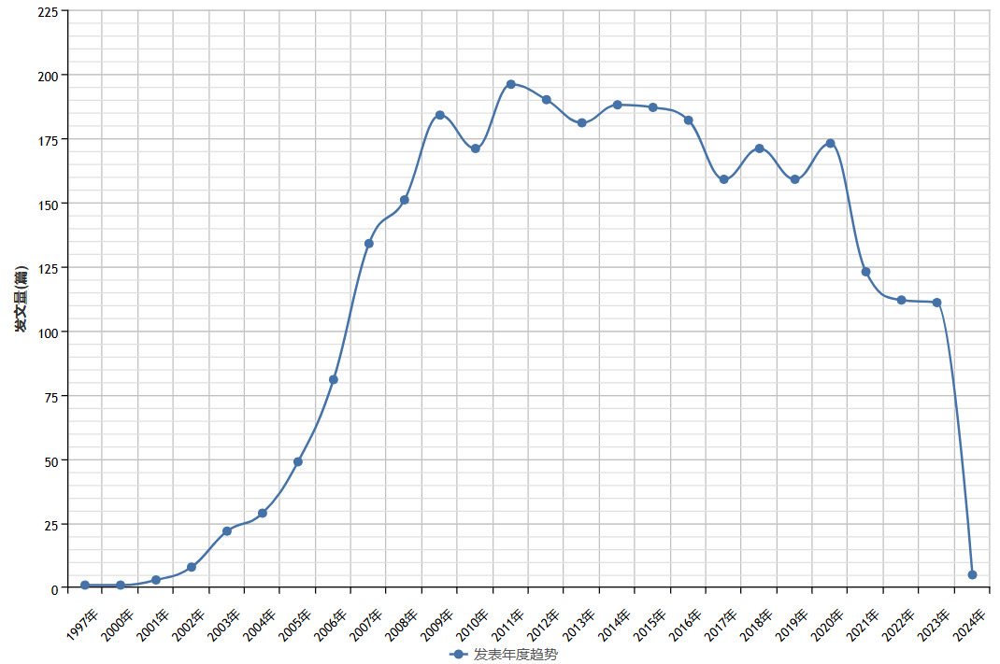
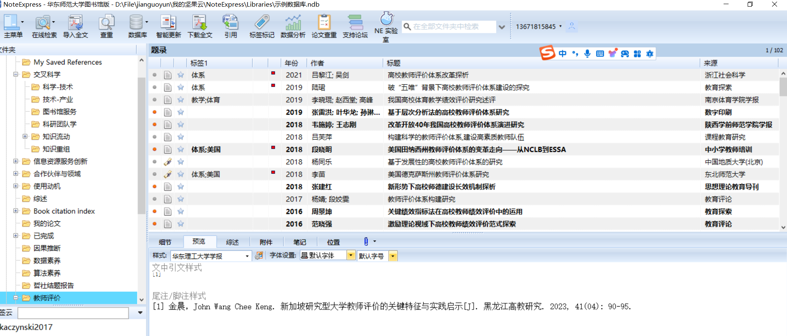
第一次粗读时，可以回答四组问题：文献大致分成哪些主题；不同对象或情境是否形成稳定分支；主要使用了哪些方法；研究重点是否随时间改变。此时不要急于用最终章节标题锁死分类。随着精读，原先按对象划分的文献可能更适合按理论划分，某些文献也可能同时属于多个主题。标签允许这种多重归属，比单一文件夹更适合综述。
文献管理工具的自动抓取并不总是准确。网页导入可能缺作者、卷期或页码，中文姓名和外文姓名可能颠倒，DOI可能指向错误版本。每条真正进入正文的文献都应与原文首页、出版社页面或可靠书目数据库核对。
3.8 从分类框架到有“综”有“述”的段落
第一步：用问题而不是文献清单搭结构
常见结构包括按主题、理论、对象、方法、时间演化和争议组织。选择标准是：这种分类能否帮助读者回答综述问题。以优师计划学生学习动机与自主学习能力为例，可以先分为“优师计划研究”和“学习动机与自主学习能力研究”，再在前一部分区分政策意义、培养路径和实施问题，在后一部分区分概念与测量、关系证据和影响因素。这样的结构能够把宏观政策与微观学习问题连接起来。
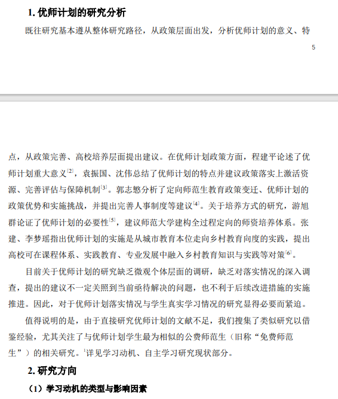
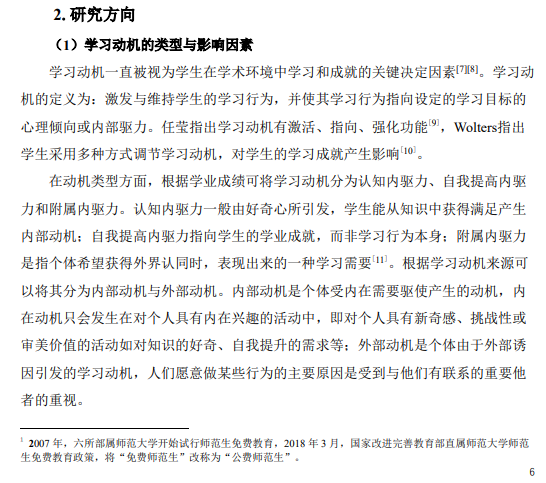
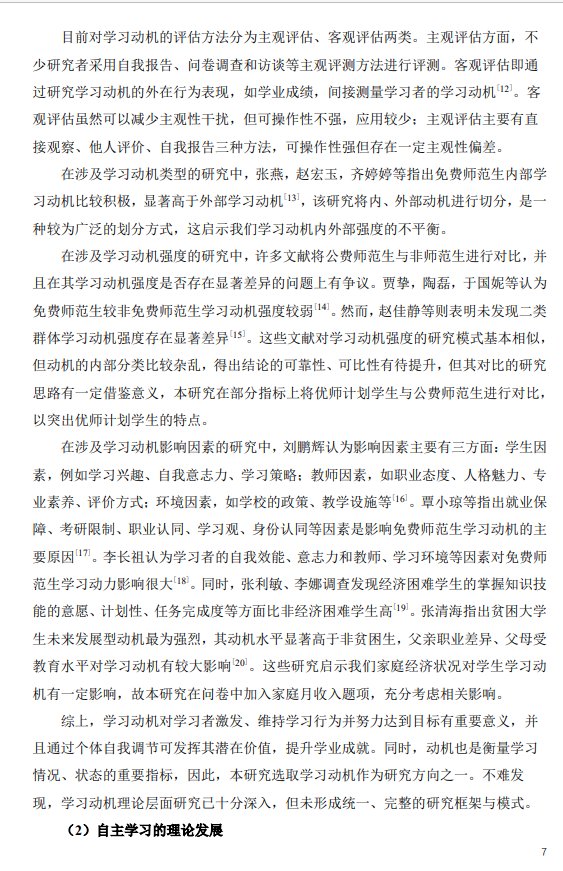
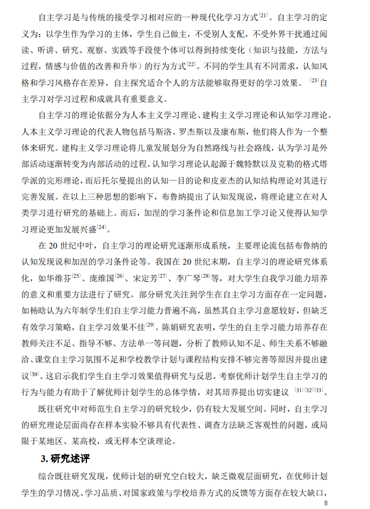
结构设计时可以做“覆盖检查”：每个一级标题回答中心问题的哪一部分；各节之间是否并列或递进；是否有某一大节只因资料多而存在；结尾的研究缺口能否由前面各节共同推出。如果删掉一节不影响论证，它可能只是背景堆积；如果某个核心问题没有对应章节，则需要继续检索或调整范围。
第二步：选择能代表知识节点的文献
一个成熟段落通常需要多篇文献共同支撑，但不是每篇文献都必须进入正文。可优先选择四类材料：界定概念或开创问题的源头文献；改变研究方向的关键节点；证据质量高、影响较大的代表研究；能够显示最新进展或提出反例的前沿文献。其他文献可以在综合性引文中出现，或保留在矩阵中作为核查依据。
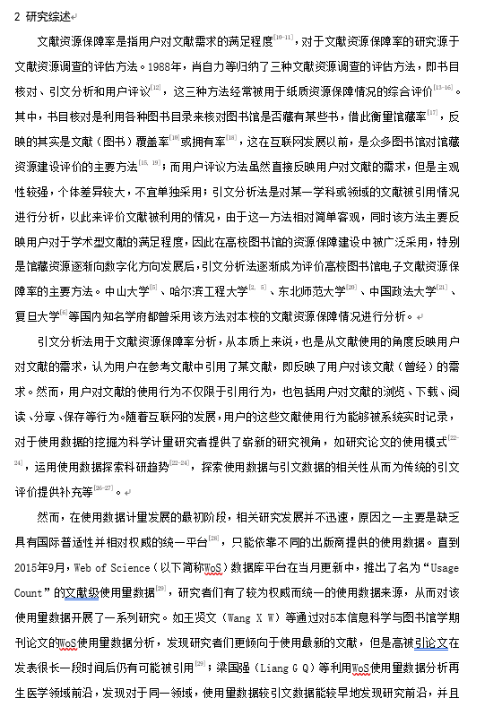
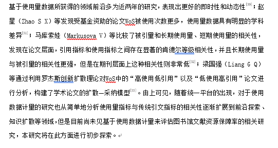
第三步：让每一段完成一个论证动作
可以把综述段落组织为“概括—证据—比较—评价—转入”五个动作。并非每段必须机械地写五句话，但五项功能应当能够辨认。
| 动作 | 要回答的问题 | 示例表达 |
|---|---|---|
| 概括 | 这一组研究共同关注什么，形成了什么基本判断 | “现有研究主要从政策供给与培养过程两条路径解释优师计划。” |
| 证据 | 哪些代表研究支持该概括，使用了什么材料 | “政策文本分析强调制度目标，院校个案则呈现培养执行中的差异。” |
| 比较 | 研究在对象、方法、结论或情境上有什么相同与不同 | “前者覆盖范围广但缺少学生经验，后者细节丰富却难以直接推广。” |
| 评价 | 这些证据能说明什么、不能说明什么 | “因此，现有证据能够解释政策设计，却不足以判断学生学习品质及其变化。” |
| 转入 | 这项判断如何引出下一节或当前研究 | “需要进一步把学习动机与自主学习指标引入微观调查。” |
评价必须具体而克制。与其写“前人研究不够深入”，不如写“多数研究采用一次性自报问卷，尚不能判断动机随培养阶段的变化”；与其写“研究视角单一”，不如说明“现有研究主要使用管理者视角，缺少学生和任课教师对同一过程的交叉证据”。具体限制会自然导向后续设计，空泛批评只会制造姿态。
中英文综述都要以综合判断收束
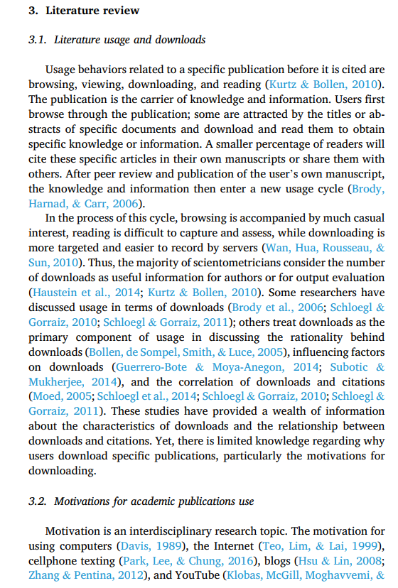
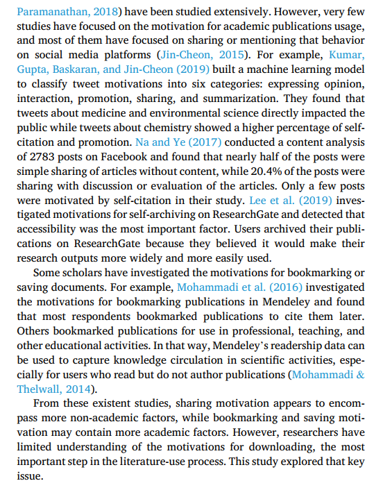
“综合既往研究发现”“由上可见”或英文中的“From these existing studies”只是转折标记，不能替代综合本身。标记之后必须出现新一层判断：哪些结论稳定，哪些存在条件，分歧由什么造成，下一步需要怎样的证据。如果删去引文后段落仍像一串没有关系的摘要，说明综合尚未完成。
模板可以检查步骤，不能替代思考
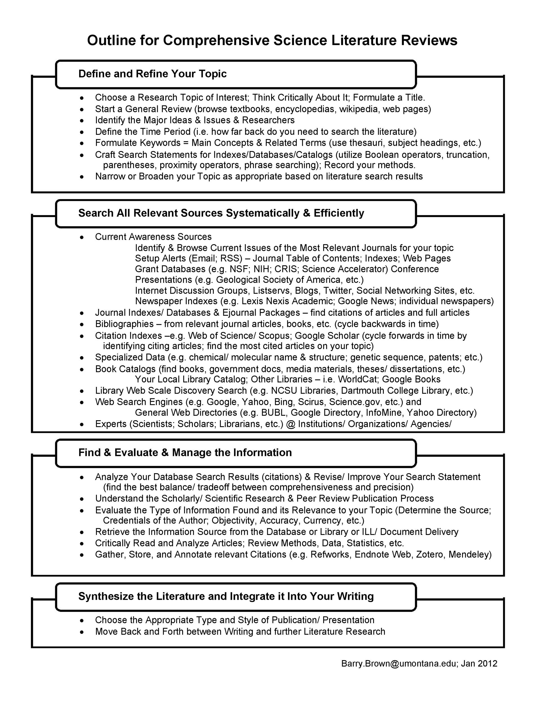
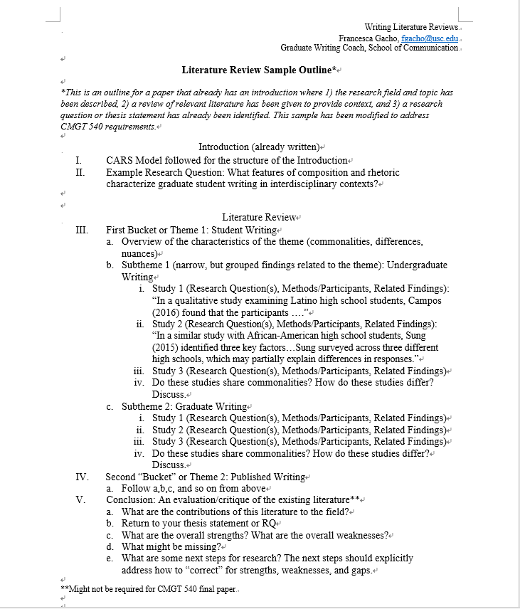
模板最容易造成的误区是先填满标题，再寻找能塞进去的文献。更好的用法是把模板当作问题清单：主题是否足够明确，检索是否可解释，评价标准是否一致，每一节是否存在跨文献比较，结尾是否真正回应中心问题。结构应当随着阅读证据调整，而不是让证据服从预先固定的框架。
3.9 文献可视化能帮助发现结构，但不能替代阅读
关键词共现可以显示哪些术语经常一起出现；聚类可以提示主题群；共被引和文献耦合可以帮助发现知识基础与相近研究；时间切片和突现分析可以观察主题变化。常见工具包括CiteSpace、VOSviewer、HistCite、ITGInsight和bibliometrix。工具是否仍在维护、支持哪些数据格式以及算法默认值会变化，使用前应核对当前版本。
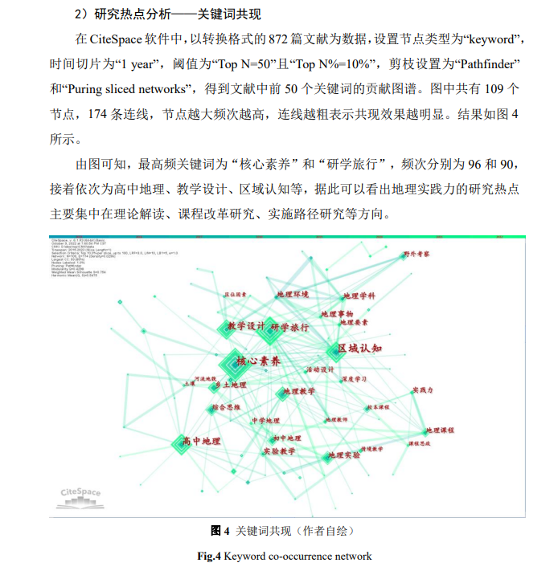
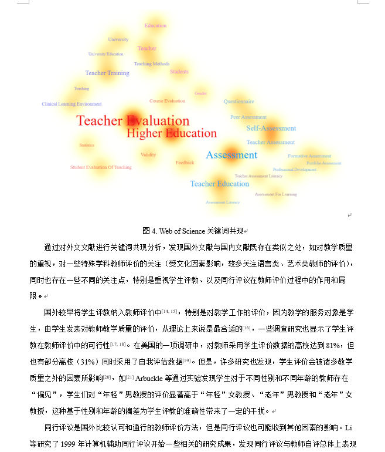
| 分析方式 | 图中元素通常代表什么 | 可以帮助回答什么 | 不能直接推出什么 |
|---|---|---|---|
| 关键词共现 | 关键词在同一记录中共同出现 | 概念组合和主题群 | 概念之间存在因果关系 |
| 共被引 | 两项文献被后续文献共同引用 | 领域的知识基础或理论群 | 被共同引用的文献观点一致 |
| 文献耦合 | 两项文献引用了相同参考文献 | 当前研究的知识相近程度 | 两项研究方法或结论相同 |
| 合作网络 | 作者、机构或国家的共同署名 | 合作结构和中心节点 | 合作质量或个人真实贡献 |
| 时间与突现 | 词或文献在某时段快速增加 | 关注变化与候选前沿 | 主题必然重要或将持续增长 |
可视化结果受数据库覆盖、检索式、去重、作者和机构消歧、关键词规范化、计数方法、阈值和聚类算法影响。VOSviewer可以构建共现、共被引、耦合和合作网络，bibliometrix则提供基于R的文献计量与科学知识图谱流程；无论使用哪种工具，都应保存数据来源、导出日期、清洗规则和参数。VOSviewer官方说明；bibliometrix官方说明
最关键的一步是回到原文验证聚类标签。软件生成的簇名可能只来自高频词，无法说明该主题内部有哪些观点和方法。网络中的大节点也可能反映术语使用广泛，而不是某项理论最重要。可视化适合帮助提出“下一批应读什么”的问题，不适合替作者完成综述判断。
3.10 参考文献是综述证据链的一部分
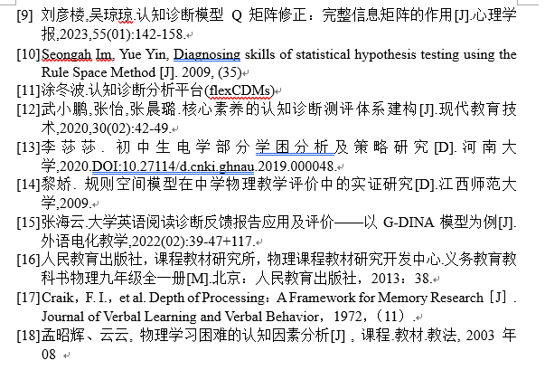
参考文献检查应分成三个层次：第一是真实性，文献确实存在且没有把相似题名混在一起；第二是对应性，正文的观点由所引来源支持，正文引文与文末条目一一对应；第三是格式一致性，作者、年份、题名、来源、卷期、页码、DOI、网址和访问日期按目标体例完整书写。
文献管理软件可以自动生成格式，却无法判断作者名是否抓取错误、文献类型是否识别正确、网页是否需要访问日期，也无法保证引文真的支持当前句子。定稿前应逐条回到原文或出版社记录核对，特别检查直接引语页码、二手转引、网络政策版本、撤稿或更正状态以及图表转载信息。
综述写作还要避免“引用漂移”：某个观点经过多次二手转述后，含义逐渐偏离原文。看到“有研究表明”时，应尽量找到最初研究；确实无法获得原文，则明确说明转引关系，不把未读文献伪装成直接阅读。参考文献数量不是质量指标，可核验的对应关系才是。
3.11 一条完整的综述工作流
把本章方法合并起来，可以形成从问题到成稿的循环流程。
| 阶段 | 核心动作 | 应留下的记录 | 进入下一步的判断 |
|---|---|---|---|
| 1. 界定任务 | 区分独立综述论文与论文中的综述，选择综述类型 | 目的、读者、体例和交付要求 | 知道综述要回答什么，而不是只知道主题名称 |
| 2. 提出问题 | 缩小对象、情境、概念和时间范围 | 中心问题、子问题、概念边界 | 问题可以指导检索和纳入标准 |
| 3. 探索检索 | 阅读源头、综述和代表研究，收集术语 | 候选词、主题词、关键作者和种子文献 | 能说明领域主要分支和术语差异 |
| 4. 设计检索 | 选择数据库、字段、逻辑与限制条件 | 数据库、日期、完整检索式、修改日志 | 检索兼顾相关性与覆盖，不被明显噪声主导 |
| 5. 筛选评价 | 去重，按题名、摘要和全文筛选，评价质量 | 纳排标准、排除理由、质量判断 | 文献集能够回答问题且选择过程可解释 |
| 6. 阅读编码 | 建立矩阵，记录理论、对象、方法、发现和限制 | 阅读笔记、页码、功能标签、待查问题 | 能跨文献比较，而不只拥有单篇摘要 |
| 7. 形成结构 | 按问题选择主题、理论、方法、时间或争议框架 | 章节提纲、文献—章节对应表 | 各节共同支撑中心论证，没有孤立资料块 |
| 8. 综合写作 | 完成概括、证据、比较、评价与转入 | 文稿版本、引文位置、反例和限制 | 空白由前文推出，措辞不超过证据范围 |
| 9. 辅助分析 | 必要时做计量和可视化，核对聚类与原文 | 数据来源、清洗规则、参数和图表说明 | 图形支持判断而非替代判断 |
| 10. 更新核查 | 重跑检索，核对引文、格式、撤稿与版本 | 最后检索日期、更新清单、引用核验表 | 新证据不会实质改变主要结论，来源可定位 |
这条流程不是直线。阅读可能迫使研究者回到问题界定，筛选结果可能暴露检索词缺陷，写作中的逻辑断点也可能提示还缺一种证据。真正成熟的综述，是在多次往返后使问题、文献范围、分类结构和研究定位彼此一致。
本章小结
综述由“综”和“述”共同构成：前者负责收集、筛选、分类和比较文献，后者负责解释、评价并形成自己的综合判断。独立综述论文与论文中的文献综述服务于不同成果，叙述性综述、整合性综述、系统综述、范围综述、文献计量研究和元分析也有不同的方法要求。
撰写综述应从明确问题和类型开始，通过文献反复校准理论、方法、数据、对象、视角或组合创新。检索时要拆分概念组、验证同义词、选择合适数据库、识别假相关，并记录检索调整；生成式人工智能只能提供候选词和启发，不能替代原文核验。筛选后应建立综述矩阵，利用文献管理工具保持书目、笔记、分类和引文连接，再以“概括—证据—比较—评价—转入”形成段落。可视化能够提示主题和网络结构，但结论仍须回到原文。参考文献的真实性、对应性与格式一致性共同构成综述的证据链。
思考与练习
- 选择一个教育研究主题，分别写出独立综述论文和实证论文文献综述的目的与边界，说明二者为何不能使用完全相同的提纲。
- 判断下列问题更适合叙述性综述、系统综述、范围综述还是文献计量研究，并说明理由：“生成式人工智能在师范生培养中被怎样使用？”“某项阅读干预能否提高理解成绩？”“教师数字素养研究形成了哪些主题群？”
- 将自己的研究问题拆成2—4个概念组，为每组列出核心词、同义词、上位词、下位词和相邻但不能等同的概念，再构造至少两版检索式。
- 找出一次检索中的最早年份记录，检查它是否真正属于研究主题。记录字段、分词、模糊匹配或概念混淆造成的噪声，并修改检索式。
- 选择10篇相关文献建立综述矩阵，至少记录研究问题、理论、对象、方法、主要发现、限制、文献功能和原文页码。根据矩阵提出两项跨文献判断。
- 把一个“张三认为、李四认为”的流水账段落改写为“概括—证据—比较—评价—转入”结构，要求保留原有引文但减少重复。
- 选择一张关键词共现或共被引图，写出其数据来源、时间范围、节点、连线、阈值和清洗规则，并列出两项可以从图中提出的问题和两项不能直接得出的结论。
- 使用文献管理软件建立“待筛选、已纳入、已排除、关键文献”四个集合，并为理论、对象、方法和文献功能设计标签。随机抽查5条书目信息是否与原文一致。
- 请生成式人工智能为一个主题列出同义词和参考文献，再逐条用数据库验证。把错误分为概念混淆、文献不存在、书目信息错误和结论不符四类，并说明人工核验如何修正检索。
- 对一段已经完成的综述做最后核查：研究空白是否由前文证据推出，是否主动纳入反例，直接引语是否有页码，政策与数据是否引用原始来源，正文引文与文末条目是否一一对应。